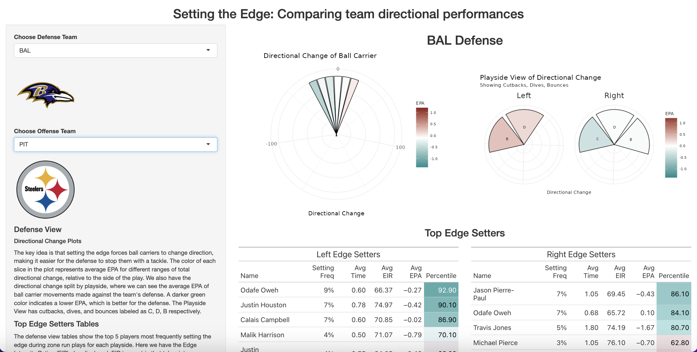
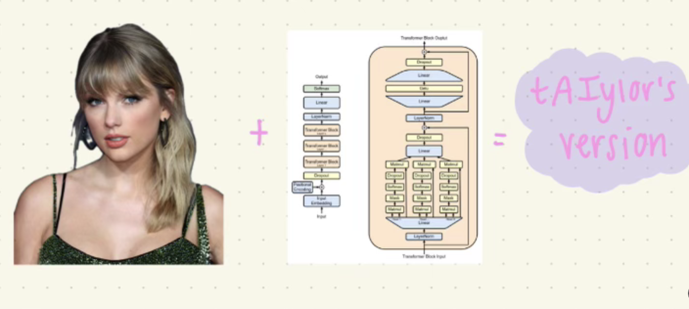
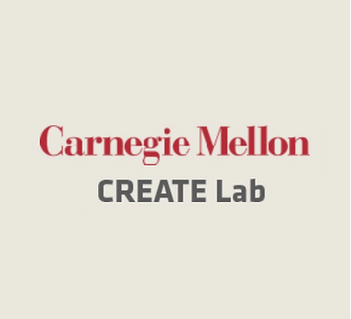

hi, i'm marion!
Transforming data into actionable insights

Transforming data into actionable insights
I love unconvering stories with data, clever data representation, and innovative feature engineering. My education and work experience have equipped me with a strong foundation in statistical analysis, machine learning, and data visualization. My interests span multiple domains including natural language processing and text analysis, football analytics, and robotics.
I'm a Pittsburgh native, avid knitter, runner, and pokemon lover!

2024 NFL Big Data Bowl Finalist: Collaborating with CMU Football Head Coach Ryan Larsen and Defensive Coordinator Ben Gibboney, we proposed a quantitative definition and evaluation metric for the defensive concept of "setting the edge". We made an R Shiny app that gives coaches a team view of edge-setting directional performance.

MindfulNest is a tool for preschool classrooms that teaches children emotion regulation techniques using both a tablet app and interactive robotic devices. My favorite part of the project was collecting field data at local Pittsburgh preschools!

Text Analysis Project: We used modern language analysis methods to compare Taylor Swift lyrics from albums included in her Taylor Swift: The Eras Tour. We fine-tuned a large language model to classify which album Taylor Swift lyrics come from. Next, we created tAIylor's version, a fine-tuned GPT-2 model that generates song lyrics in a style of writing similar to Taylor Swift! In doing so, we investigate the questions: Can AI be creative? Can AI write song lyrics?
JPMorganChase
2024 - Present
Design, train, and deploy machine learning models for Payments operations and efficiency.

CREATE Lab
August 2022 - May 2024
Researcher on MindfulNest: a tool for preschool classrooms aimed at teaching children emotion regulation skills. Children can use MindfulNest on their own to learn about emotions and how to self-regulate. Helped collect and analyzed data from the 2022-2023 Emotion Regulation study, where MindfulNest piloted in 10 Pittsburgh classrooms, reaching over 100 students!
Gopuff
May 2022 - August 2022
Joined the Partner Integrations team and focused developing third-party integrations. Created user stories and usability workflows, product requirements documents, and researched emerging markets. Worked with a team of engineers daily through an Agile workflow.
Highmark Health
May 2021 - October 2021
Worked on the Service Portfolio Analytics & Request (SPAR) Team. Leveraged and managed IT softwares and services for the company. Managed IT catalogs and created financial reports via Tableau dashboards as well as an interactive website for internal company use.
Carnegie Mellon University
Graduated: May 2024
Specialized in machine learning and statistical modeling.
Carnegie Mellon University
Graduated: May 2023
Coursework in Statistics, Computer Science, Probability Theory, Regression Analysis, Natural Language Processing, Statistical Methods in Epidemiology
send me a message!